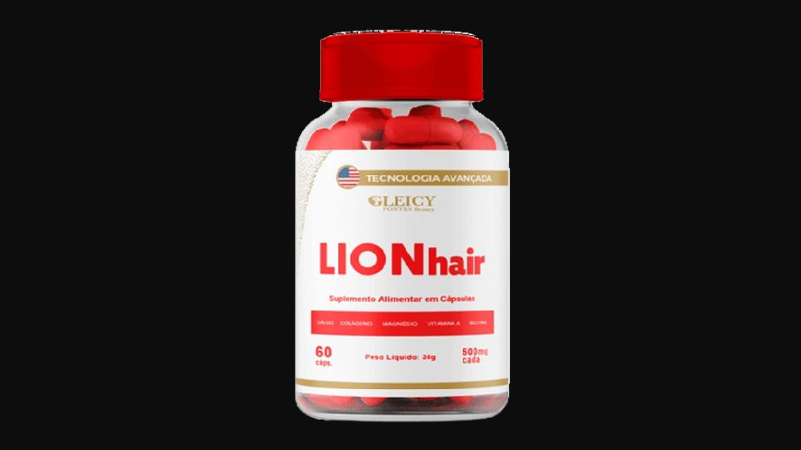

Analisamos os 5 ingredientes da vitamina capilar Lion Hair para cabelo, pele e unhas. Sem promessa exagerada.
Por Dra. Ana Mendes — Especialista em Suplementos e Saúde Feminina · Publicado em abril de 2026

Acesse o site oficial e confira os kits e condições.
→ Acessar Site Oficial da Lion Hair✓ ANVISA aprovado · Pagamento via Monetizze · 12x no cartão
A Lion Hair é um suplemento vitamínico em cápsulas desenvolvido para tratar de dentro para fora a saúde dos cabelos, unhas e pele. A fórmula ultra concentrada combina 5 ingredientes essenciais que nutrem os fios, estimulam o crescimento capilar e fortalecem a estrutura do cabelo.
O produto é aprovado pela ANVISA conforme RDC nº 27/2010 e comercializado pela plataforma Monetizze pela Gleicy Pontes Beauty.
O ingrediente mais estudado para saúde capilar. Estimula a produção de queratina — proteína estrutural do cabelo — contribuindo para fios mais fortes, redução da queda e crescimento acelerado. Também fortalece as unhas.
Proteína essencial para a estrutura dos fios. O colágeno hidrolisado tem absorção rápida pelo organismo e contribui para a elasticidade e resistência dos cabelos, além de melhorar a firmeza da pele.
Mineral essencial não apenas para os ossos — também participa da regulação do ciclo capilar e contribui para a saúde dos folículos pilosos.
Atua no metabolismo proteico e na síntese de queratina. Deficiência de magnésio está associada à queda capilar — sua suplementação contribui para a redução da queda e fortalecimento dos fios.
Essencial para a produção de sebo no couro cabeludo — o lubrificante natural que mantém os fios hidratados e saudáveis. Também atua na renovação celular da pele.
Biotina e Magnésio atuam diretamente nos folículos pilosos, fortalecendo a raiz e reduzindo a queda de fios já nas primeiras semanas de uso.
A combinação de Biotina e Colágeno estimula o ciclo de crescimento capilar, promovendo fios mais longos e saudáveis.
Biotina, Cálcio e Colágeno fortalecem as unhas, reduzindo a quebra e promovendo crescimento mais rápido.
Vitamina A e Colágeno atuam na renovação celular e na firmeza da pele, contribuindo para uma aparência mais jovem e saudável.
ANVISA aprovado · Ingredientes naturais · Parcelamento em até 12x
→ Acessar Site Oficial da Lion Hair✓ Pagamento seguro via Monetizze · Entrega rastreada
Conteúdo informativo e independente. Não substitui orientação médica. Resultados podem variar. Este site contém links de afiliado.